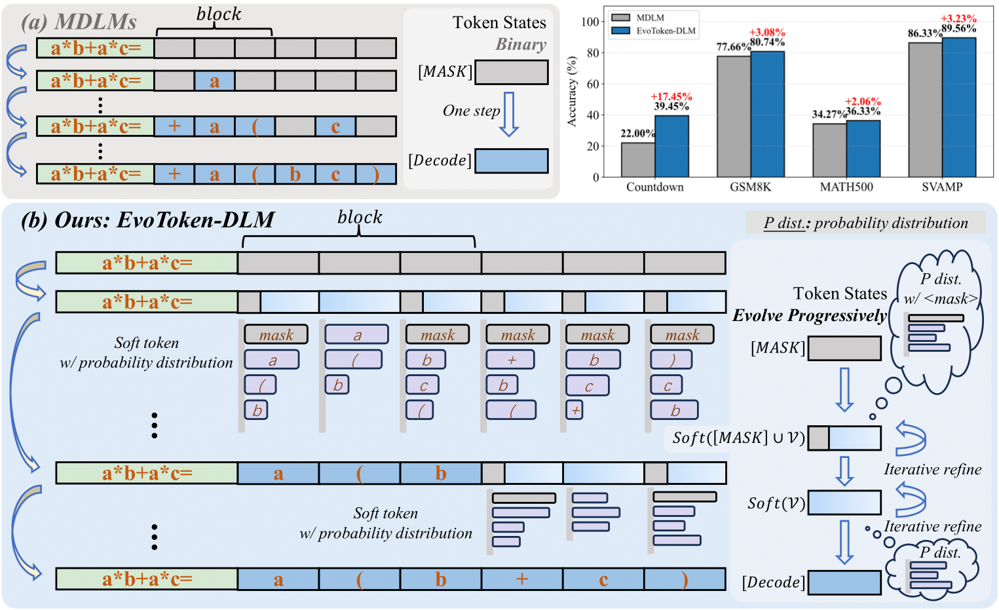
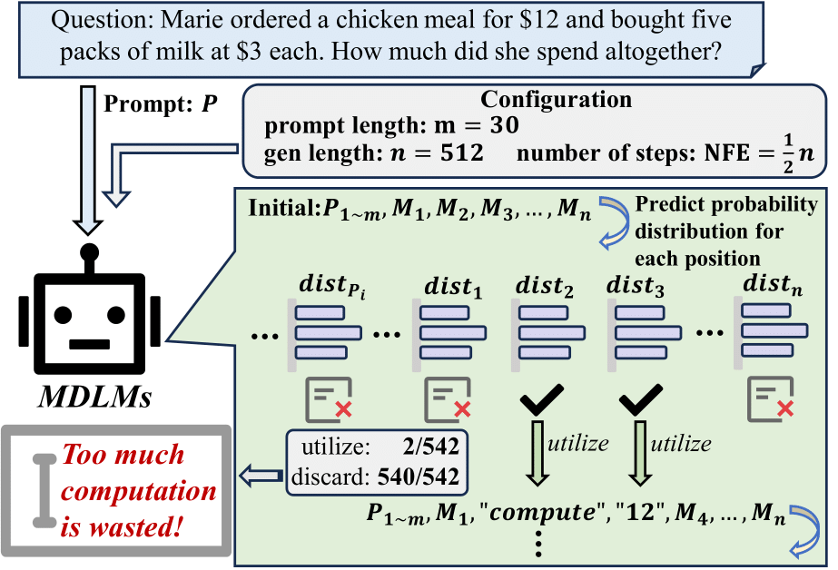
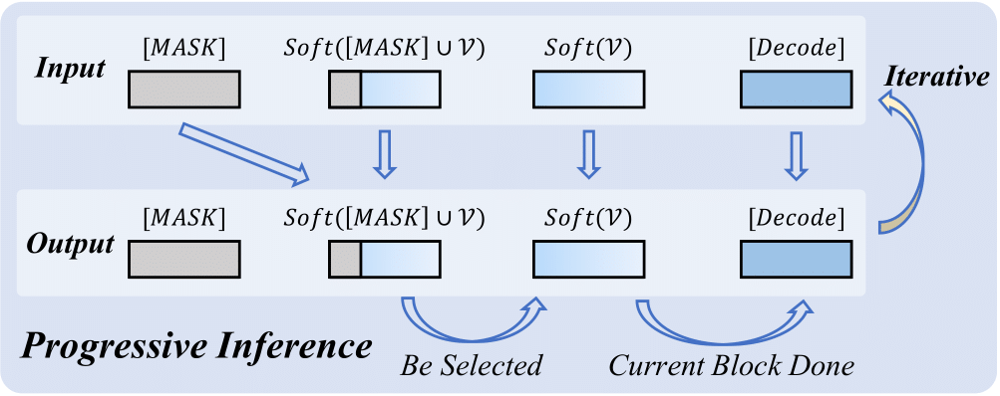
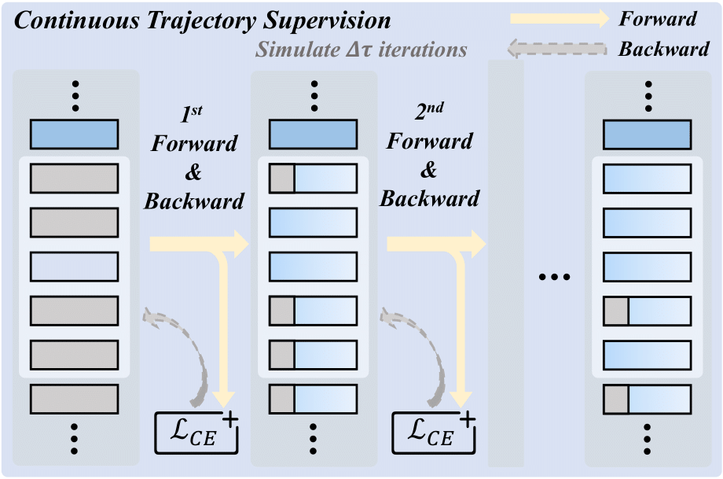
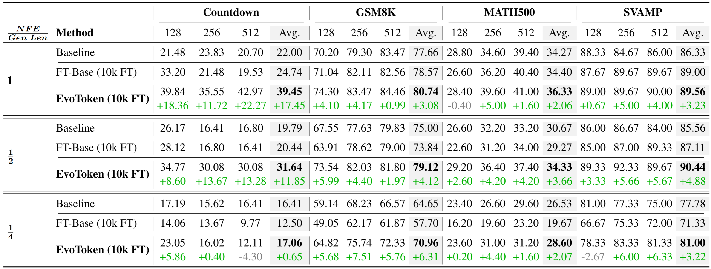
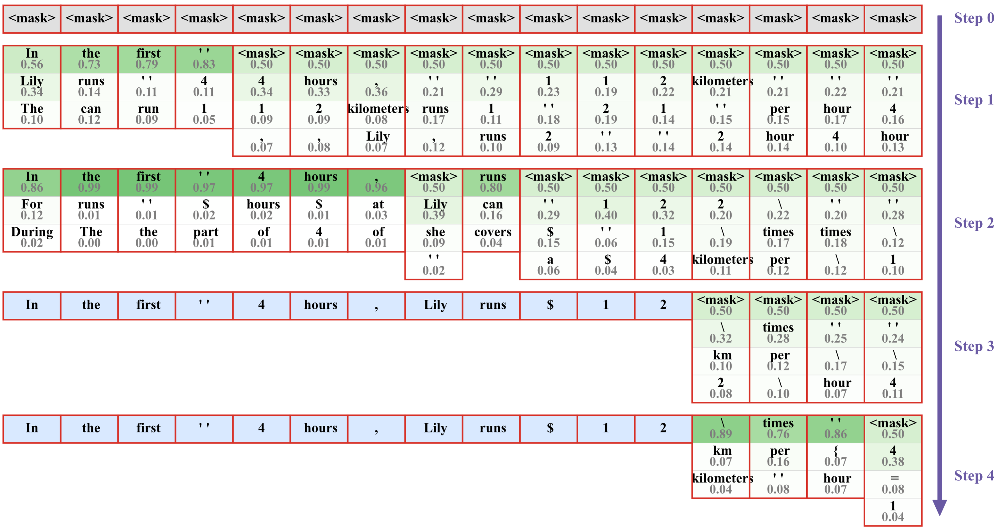

Abstract
Diffusion Language Models (DLMs) offer a promising alternative for language modeling by enabling parallel decoding through iterative refinement. However, most DLMs rely on hard binary masking and discrete token assignments, which hinder the revision of early decisions and underutilize intermediate probabilistic representations. In this paper, we propose EvoToken-DLM, a novel diffusion-based language modeling approach that replaces hard binary masks with evolving soft token distributions. EvoToken-DLM enables a progressive transition from masked states to discrete outputs, supporting revisable decoding. To effectively support this evolution, we introduce continuous trajectory supervision, which aligns training objectives with iterative probabilistic updates. Extensive experiments across multiple benchmarks show that EvoToken-DLM consistently achieves superior performance, outperforming strong diffusion-based and masked DLM baselines.

Motivation
Most MDLMs rely on hard binary masking with discrete token assignments. Once a token is decoded, it is treated as final and excluded from further refinement, resulting in an abrupt transition from uncertainty to determinism. This irreversibility limits the model's ability to revise early decisions and undermines the iterative refinement paradigm of diffusion-based language modeling. In addition, although MDLMs compute token distributions for all positions at each refinement step, only a small subset of positions are updated, while the remaining probabilistic information is discarded.

Methodology
Progressive Inference with EvoToken-DLM
We formally define the progressive inference procedure of EvoToken-DLM as follows. Given a prompt P, the objective is to generate a response of length N. The output is partitioned into M = N/B discrete blocks, each of size B. The sequence X is constructed by concatenating the prompt P with N tokens, denoted as X = (P, x1, x2, ..., xN), where each token xi is characterized by a pair (ei, zi), comprising continuous embeddings ei and a token state zi. Initially, all target positions are initialized as mask tokens, where zi = [MASK] for all i ∈ {1, ..., N}, and the corresponding embedding sequence is represented as E = (eP, e<mask>1, ..., e<mask>N). During the evolution process, each token xi transitions through a state space consisting of four distinct stages: $$ \texttt{[MASK]},\ \mathrm{Soft}([\texttt{MASK}] \cup \mathcal{V}),\ \mathrm{Soft}(\mathcal{V}),\ \texttt{[Decode]}, $$ where \(\mathcal{V}\) is the vocabulary.

Token Prediction. At each inference step, we input embeddings E into the model to obtain a predicted distribution \(\{p_i^c\}_{c=1}^{|\mathcal{V}|}\) over the vocabulary for each position i. We retain the top-K probabilities and renormalize them to obtain \(\{\hat{p}_i^c\}_{c=1}^{K}\), along with their corresponding tokens \(\{\hat{v}_i^c\}_{c=1}^{K} \subseteq \mathcal{V}\). Soft embeddings are then computed as: $$ \begin{aligned} e_i^{\text{dist}} &= \sum_{c=1}^{K} \hat{p}_i^c \cdot e^{\hat{v}_i^c}, \\ e_i^{\text{dist+M}} &= \alpha \, e_i^{<\text{mask}>} + (1-\alpha) \, e_i^{\text{dist}}, \end{aligned} $$ where \(\alpha \in [0,1]\) controls the mixing ratio of the mask embedding.
Embedding Assignment by Token State. For token xi, its newly generated embeddings at the current step is assigned based on its current state: $$ e_i = \begin{cases} e_i^{<\text{mask}>}, & z_i = \texttt{[MASK]} \\ e_i^{\text{dist+M}}, & z_i = \mathrm{Soft}([\texttt{MASK}] \cup \mathcal{V}) \\ e_i^{\text{dist}}, & z_i = \mathrm{Soft}(\mathcal{V}) \\ e^{v_i}, & z_i = \texttt{[Decode]} \end{cases} $$ where vi is selected as the token in the vocabulary with the highest confidence among all historical predictions made after xi enters the \(\mathrm{Soft}(\mathcal{V})\) state.
Step-wise Token Update. By default, tokens in the [MASK] state transition to \(\mathrm{Soft}([\texttt{MASK}] \cup \mathcal{V})\), whereas tokens already in the \(\mathrm{Soft}([\texttt{MASK}] \cup \mathcal{V})\), \(\mathrm{Soft}(\mathcal{V})\), or [Decode] states retain their current state. At each step, a subset of tokens currently in the [MASK] or \(\mathrm{Soft}([\texttt{MASK}] \cup \mathcal{V})\) states in the current block is selected to transition to the \(\mathrm{Soft}(\mathcal{V})\) state. Let S denote the set of these selected tokens. The complete update rule is formalized as: $$ z_i \gets \begin{cases} \mathrm{Soft}([\texttt{MASK}] \cup \mathcal{V}), & z_i \in \{\mathrm{Soft}([\texttt{MASK}] \cup \mathcal{V}), \\ & \quad \quad \texttt{[MASK]}\} \text{ and } x_i \notin S \\ \mathrm{Soft}(\mathcal{V}), & x_i \in S \text{ or } z_i = \mathrm{Soft}(\mathcal{V}) \\ \texttt{[Decode]}, & z_i = \texttt{[Decode]} \end{cases} $$
Blockwise Decoding. Let \(\mathcal{B}\) denote the set of tokens in the current block. Once all tokens in \(\mathcal{B}\) reach the \(\mathrm{Soft}(\mathcal{V})\) state, they are simultaneously converted to the [Decode] state: $$ \begin{aligned} z_i &\gets \texttt{[Decode]}, \quad \forall x_i \in \mathcal{B}, \\ &\text{if all tokens } x_j \in \mathcal{B} \text{ are in the } \mathrm{Soft}(\mathcal{V}) \text{ state}. \end{aligned} $$ Combining step-wise token update with blockwise decoding, EvoToken-DLM allows each token to gradually refine its representation from [MASK] to final [Decode] through progressive token evolution.
Continuous Trajectory Supervision
Unlike conventional masked diffusion frameworks, EvoToken-DLM employs a progressive evolution mechanism. In this approach, the current states and embeddings of the tokens are conditioned on the cumulative history of the preceding refinements. This temporal dependency renders standard single-step denoising objectives inapplicable, necessitating a specialized training paradigm that models the trajectory of token evolution. We propose continuous trajectory supervision, a training strategy that aligns model optimization with iterative probabilistic token refinement along the diffusion trajectory \(\mathcal{T}\). This approach ensures consistency from training to inference.

Initialization and Masking Strategy. Given a sequence comprising a prompt and a target response, we sample a contiguous segment of length L from the response as the current training block. To align with the blockwise inference procedure, tokens preceding this block are set to the ground truth, while tokens after this block are replaced with [MASK]. Within the selected block, we randomly mask a subset of tokens to initialize the state X(0).
Trajectory Unrolling. Starting from X(0), we simulate \(\Delta \tau\) consecutive refinement steps to sample the trajectory: $$ X^{(i)}, \; \mathcal{L}^{(i)} = \mathrm{Model}(X^{(i-1)}), \quad \forall i = 1, \dots, \Delta \tau, $$ where each forward pass produces probability distributions, updated continuous embeddings, and updated token states according to the progressive inference rules described in Section above.
Cumulative Trajectory Loss. At each step i, we compute a supervised loss \(\mathcal{L}^{(i)}\) against the ground-truth tokens within the current block. Rather than backpropagating only through the final step, we perform a backward pass for every forward step: $$ \nabla_\theta \mathcal{L}^{(i)}, \quad i = 1, \dots, \Delta \tau. $$ By explicitly simulating the progressive refinement during training, continuous trajectory supervision aligns the learning objective with the inference behavior of EvoToken-DLM.
Experimental Results
Results
We employ LLaDA-Instruct-8B as our primary backbone for fine-tuning. For fine-tuning, we utilize the S1K dataset and train the pretrained model for a default duration of 10k steps using continuous trajectory supervision. Evaluations are performed across several mathematical and reasoning benchmarks, including Countdown, GSM8K, MATH500, and SVAMP. For the proposed refinement mechanism, we perform a grid search for the hyperparameter α within the candidate set {0.5, 0.6, 0.7, 0.8, 0.9} and report the performance associated with the optimal α for each setting. We compare EvoToken-DLM against the original LLaDA-Instruct-8B and the FT-baseline across multiple reasoning benchmarks. EvoToken-DLM predominantly surpasses both baselines, exhibiting substantial performance leaps under varying configurations. Specifically, at NFE/Gen Len = 1, our method yields average accuracy gains of 17.45% on Countdown, 3.08% on GSM8K, 2.06% on MATH500, and 3.23% on SVAMP compared to the original model. These results underscore the superiority of our soft token evolution framework in enhancing reasoning capabilities and generation quality.

Qualitative Visualization
We provide a qualitative visualization of the inference process. By tracing the evolution of a selected subsequence, we observe how initial uncertain tokens progressively converge into precise and coherent results. This visualization confirms that EvoToken-DLM effectively implements a progressive refinement mechanism, allowing the model to iteratively calibrate its predictions within the diffusion framework.

Citation
@article{zhong2026beyond,
title={Beyond Hard Masks: Progressive Token Evolution for Diffusion Language Models},
author={Zhong, Linhao and Wu, Linyu and Fang, Bozhen and Feng, Tianjian and Jing, Chenchen and Wang, Wen and Zhang, Jiaheng and Chen, Hao and Shen, Chunhua},
journal={arXiv preprint arXiv:2601.07351},
year={2026}
}